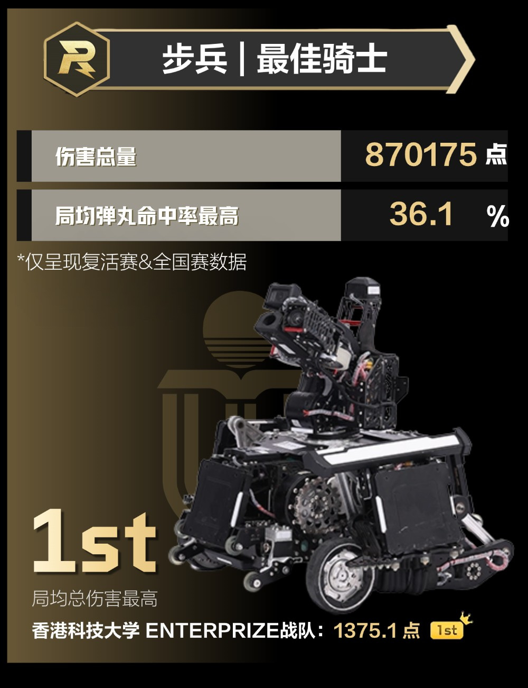

RoboMaster 2025 — Infantry Robot
Our infantry robot for the 2025 RoboMaster season — a wheel-legged (series-link) design built around a high-capacity ammunition system. As team leader I was responsible for its development across the whole season, from concept and design reviews to competition.
- Series wheel-leg chassis, built for the 2025 terrain — two-step stairs, tunnels, and 43° slopes
- Gooseneck gimbal with a center feed path; over 800 rounds on board
- Top infantry robot (“Best Knight”) of the 2025 national championship — 1st in average damage per match (1375.1 pts), with the highest average hit rate (36.1%)
The full mechanical design is open-sourced on the RoboMaster forum, and the robot was featured on the official RoboMaster Bilibili channel.
We won the Zhejiang regional competition (3V3), and I was named an Outstanding Captain of RoboMaster 2025.
Mechanical open-source (CN) ↗
Official feature video (CN) ↗
RMUC 2025 recap (CN) ↗
Results ↗
Invited share (CN) ↗

